جواب
استیفن مارشاک زمین شناس برجسته آمریکایی در سال 1998 در کتاب زمین تصویری از یک سیاره میگه :
زمین از چهار لایه تشکیل شده
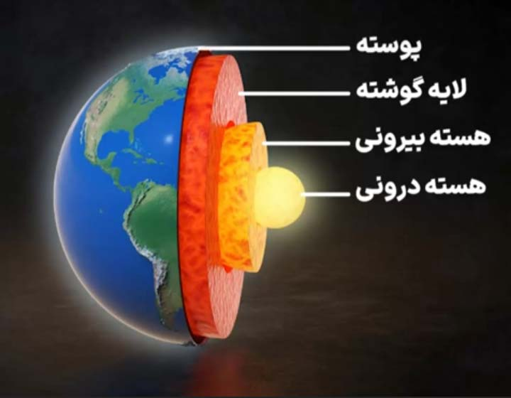1. هسته درونی که بسیار داغه و دمایی حدود 5400 درجه سانتیگراد داره
2. هسته بیرونی
3. لایه گوشی که نیمه جامد و داغه
4. و پوسته که نازک ترین لایه زمینه
که سطح زمین رومثل یک فرش پوشونده و میگه اگه این پوسته فرش مانند نبود یعنی هیچ لایه سخت و ثابتی روی زمین قرار نداشت اونوقت سطح زمین نرم یا مایه بود و هیچ جایی برای حیات و زندگی وجود نداشت
در آیه 19 سوره نوح کلمه بِساطا در زبان عربی از ریشه بسط است یعنی گسترش و پهن کردن
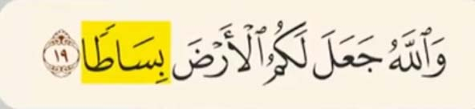 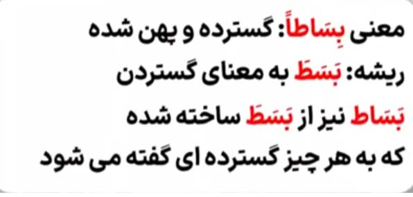از همین ریشه اسم بساط هم ساخته شده که در عربی به معنی به معنی فرش گسترده و پهنه
و در آیه 22 سوره بقره خداوند میگه :
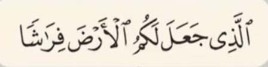زمین را برای شما صاف و هموار قرار دادیم و این مسطح دیدن در محدوده زندگی ما انسان ها معنا داره نه در مقیاس کیهانی و ریاضی
اتفاقا قرآن اشاره های دقیق و شگفت انگیزی به کروی بودن زمین داره
در آیه 5 سوره زمر خداوند میگه :

شب را بر روز می پیچاند و روز را بر شب می پیچاند
راغب اصفهانی ادیب و لغت شناس ایرانی
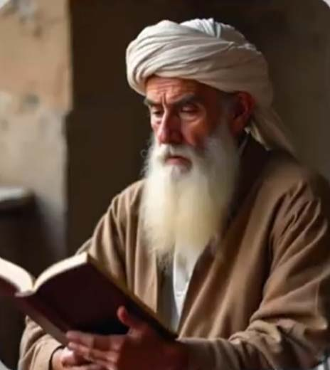در قرن چهارم هجری
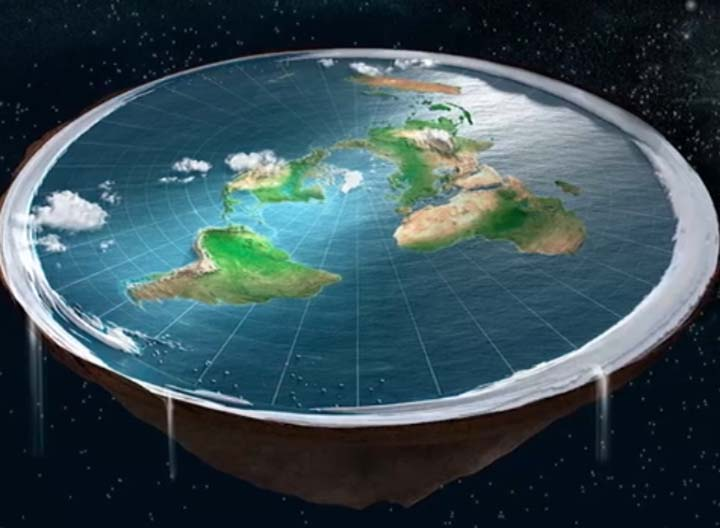اون زمانی که همه فکر میکردند زمین تخته میگه :
معنای یُکور پیچاندن چیزی به دور چیز گرده
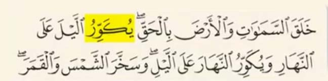مثل پیچاندن عمامه دور سر
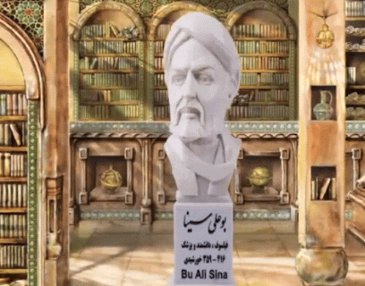در گذشته اکثر مردم عمامه به سر می پیچیدن و قدیمی ترین و رایج ترین مدل بستن عمامه مدلی هست که هنوز در هند رایجه

اگر به نوع پیچیدن عمامه توجه کنیم از یک سمت با زاویه تقریبا منفی 20 تا منفی 30 درجه شروع میشه و در هر دور این زاویه بیشتر میشه و کم کم به صفر و نهایتا از سمت دیگه با زاویه تقریبا مثبت 20 تا 30 درجه تموم میشه
حالا اگر به زمین توجه کنیم جالیه که پیچیدن شب در روز و پیچیدن روز در شب هم همینطور از یک سمت با زاویه منفی 22 درجه شروع میشه و تا مثبت 22 درجه در یک دوره کامل که یک سال خورشیدی هست تغییر می کنه
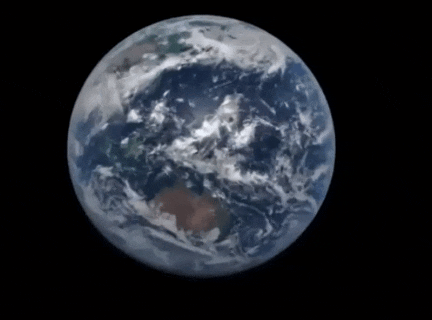که همین تغییر درجه باعث ایجاد فصل ها میشه
در انواع بستن عمامه بالا و پایین عمامه پارچه ای پیچیده نمیشه
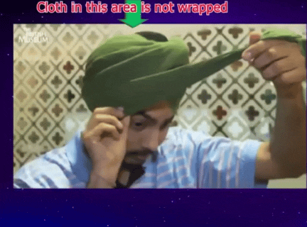اگه به زمین دقت کنیم پیچیدن شب و روز در هم در قطب های شمال و جنوب صورت نمیگیره به همین دلیل با هر بار چرخش زمین به دور خودش تغییری در شب و روز در قطب ها ایجاد نمیشه و در این دو قطب شش ماه روز و شش ماه شب هست

حالا اگر این دو منطقه رو از زمین جدا کنیم و با عمامه مقایسه کنیم شباهت عجیب اونهارو میبینیم
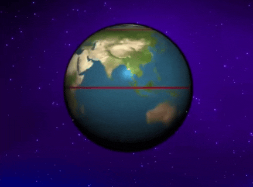در عمامه بالا و پایینش پاچه پیچیده نمیشه و در زمین شمال و جنوبش روز و شب نمیشه
آیا این هم تصادفی اومده در قرآن